Curious Being
Megalithic Knobs Worldwide: Molded or Quarried — Why It Matters
Tina · 24 min · watch on YouTube · summarised 2026-08-22
The core move is methodological, and it is the most useful part of the video: the knobs found on megalithic stonework around the world are routinely discussed as a single mystery, and Tina argues they are at least four different things with four different causes. Lumping them together, she says, "muddies the water" — you cannot explain a category that isn't one.
Three of the four types she considers ordinary construction. Only the third is the anomaly, and that is where her actual claim sits.
Type 1 — Lifting bosses (ordinary)
Protrusions deliberately left on a block so it can be moved with ropes and levers, sometimes never trimmed off afterwards, sometimes kept as decoration.
Diagnostic features — and these matter, because they become the test for the other types:
- centred on the block, or symmetrically paired
- flat bottom, so a rope seats and the block hangs level
- enough projection to actually tie or hook onto
Where 02:20–04:26 — the Propylaea, the gateway to the Acropolis at Athens, which she says carries more than 400 of them on its façades. Egyptian sarcophagus lids, usually two pairs, which she reads as needed because a long thin lid would rotate on a single pair. Some Indian temples, and she is careful to add that not all Indian knobs are in this category. Related lifting methods appear alongside: lewis bolt holes at Roman sites, and lifting-tong holes on the blocks of the Segovia aqueduct.
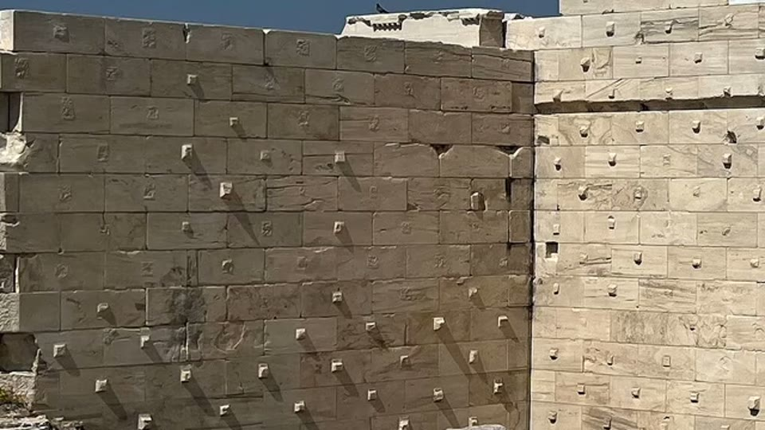
This is the accepted archaeological reading of knobs, and she accepts it for these. Once you have seen what a lifting boss looks like, the Peruvian knobs below need no argument.
Then she applies the test, which is the part worth watching 05:03–06:38. The head block at Yangshan quarry has knobs with ample projection, but they sit in two uneven rows that do not line up and most of their bottoms are sloped, so a rope would slide off — they fail. At Ollantaytambo, some knobs pass: single ones on or near the centre line, pairs of matching size with flat bottoms. Others at the same wall fail: off-centre, stacked vertically, or cone shaped with nothing to wrap a rope around, including the knobs on the Wall of Six Monoliths.
One site can carry more than one type, which is the whole point of the exercise and the reason the scheme is worth more than the conclusion it serves.
Type 2 — Mortise-and-tenon joints (ordinary)
Large, regular, rectangular protrusions that lock into a matching recess in the next block — the tenon is the knob. Structural, not incidental. Her marker is that they should come in pairs, a mortise hole for every tenon tongue, and that they have no reason to line up the way lifting bosses do.
Where 06:38–08:16 — the large square and long rectangular protrusions at Ollantaytambo, which she assigns here on scale alone; Coricancha in Peru, where some are "too big and unnecessarily oversized" to be lifting bosses; the Osireion at Abydos; and the Chinese stone tomb Beidongshan, which she covered in an earlier video. She also notes that Coricancha's loose, unbuilt blocks show the full range of joints, which is a fair point about what a scattered site lets you see.
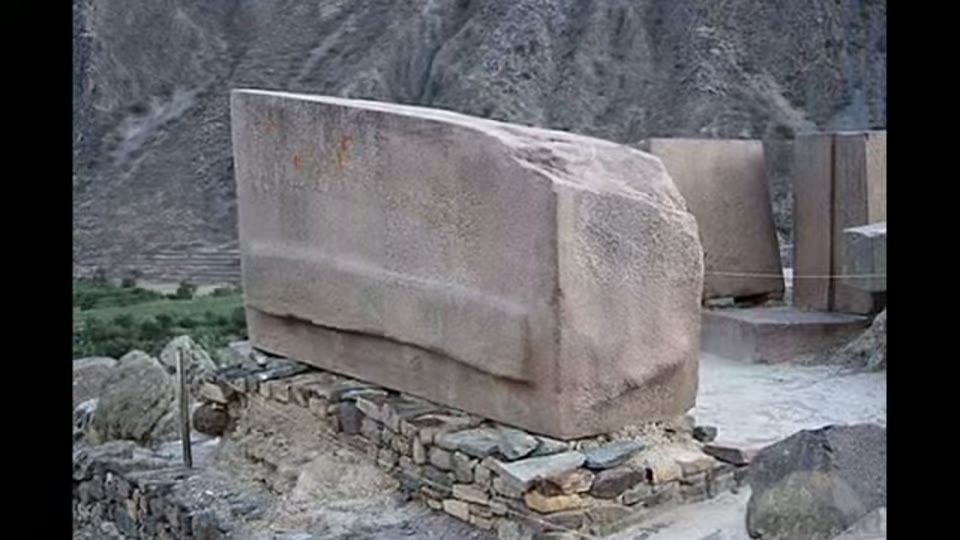
Too large and too linear to be a lifting boss: her test against bosses is size, and unlike bosses these have no reason to line up.
Type 4 — Designed supports and unfinished decoration (ordinary)
Prominent knobs whose placement implies a specific job 20:52–22:02: cylindrical ones ringing window openings at Machu Picchu, which she reads as supports for horizontal members and speculates might be curtain-rod or flag holders; a row of evenly spaced knobs too large for lifting, resembling vigas, exposed beam ends; and bossage — uncut stone deliberately left proud to be carved into mouldings or capitals later, which would make some Yangshan and Indian temple knobs simply unfinished work.
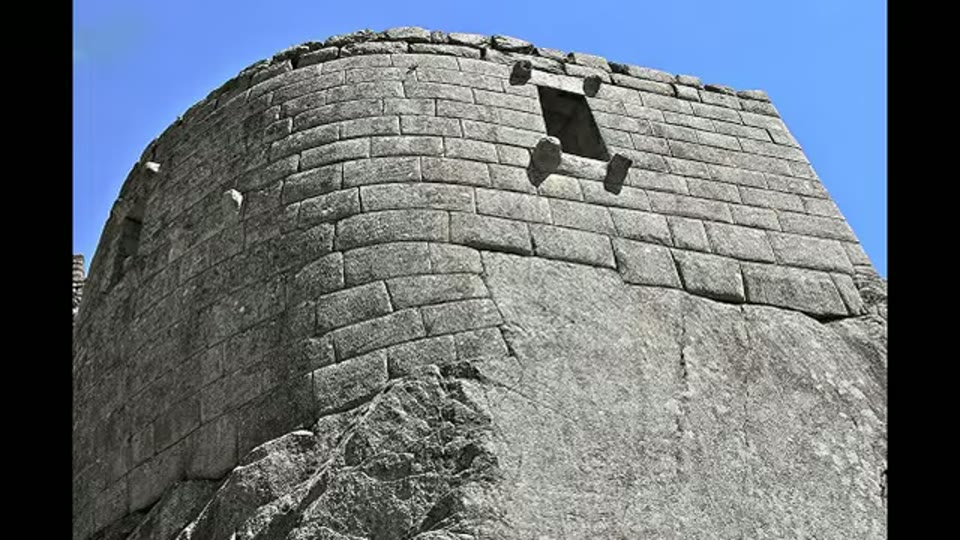
The counter-case, and the reason the four-way split matters: here the placement does imply a function, so these knobs need no anomaly to explain them.
Type 3 — The anomaly, and the actual argument
The observation. A class of knobs that fails every test above 09:30–10:02: irregular and random in shape, frequently off-centre, often too shallow to hold a rope, with sloped bottoms a rope would slide off. Concentrated at Cusco, Sacsayhuamán, Ollantaytambo — and also at the Osireion and the Menkaure pyramid in Egypt.
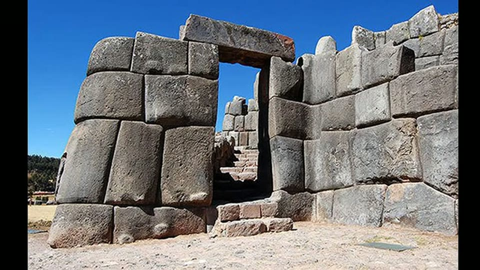
Irregular, off-centre, too shallow to hold a rope, sloped bottoms a rope would slide off — the class that fails every diagnostic for a lifting boss.
Two observations lead into it. At Coricancha she points to indentations with curved raised edges that she says do not look like quarry marks but like a clay-like material scooped out, and asks outright: "Could the stone have been soft at one time?" 08:16–08:37. And on the Wall of Six Monoliths at Ollantaytambo, in better light, she points out faint shallow scraping strokes across the faces — some horizontal, some vertical, one apparently curved — which she distinguishes from the carved decorative panel on one of the monoliths and compares to the strokes left by troweling wet concrete 08:37–09:24.
The argument's structure is worth noting. She does not argue from the knobs alone. She points out that the sites carrying these knobs share a cluster of other features, and argues that any explanation of the knobs must explain the cluster too 10:02–11:06:
| feature | what she says |
|---|---|
| dry-stacked, no mortar | joints so tight "a single piece of paper couldn't be inserted" |
| no quarry or tool marks | surfaces smooth where cutting marks should be |
| scraping marks | broad shallow strokes, and at Coricancha one running across multiple blocks |
| stamp-like indents | pressed-in marks she calls "inverted knobs" |
| bulging, pillowy faces | consistent slight swelling, strongest at Sacsayhuamán and Cusco |
| sunken joints | seams subtly recessed, "as if they have been worked with edging tools" |
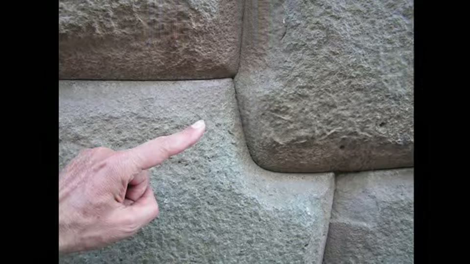
The consistent swelling that goes with the anomalous knobs: faces bulging softly, joints sunk between them, and a fit tight enough that she repeats the line about a sheet of paper.
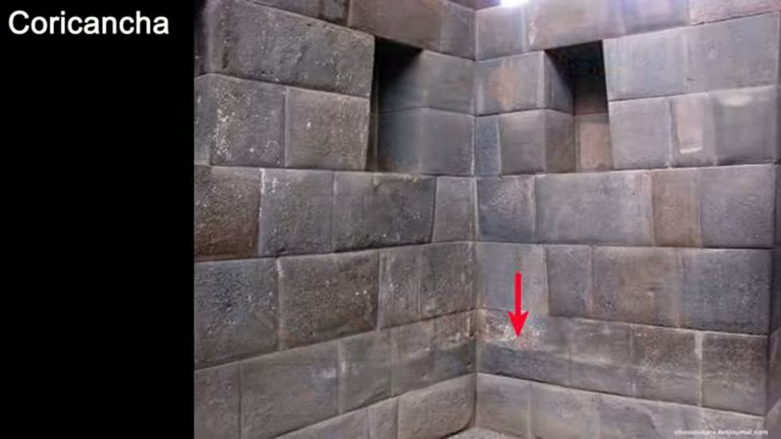
A mark that runs across a joint onto the next block cannot have been made before the blocks were placed, which is hard to arrange if each was cut separately.
The strongest single piece of evidence 11:19–12:43 is the partially-finished work, and it is two different observations at two sites rather than one:
- At the Menkaure pyramid, rows of flat-planed blocks sit next to puffy-looking ones, and some individual blocks are flat on one side and bulging on the other — the one she calls "the oddest thing and the best evidence".
- At the Osireion, the difference runs between courses rather than across a single block: the upper blocks stand flat and straight while the lower ones bulge and thicken, with what she reads as screeding marks running top-down and the strokes of the screed tool still visible.
She reads both as screeding, the modern concrete step in which excess pliable material is redistributed, compressed and struck off level, caught half-done. On that reading these are abandoned projects, which is why the method is still legible at all.
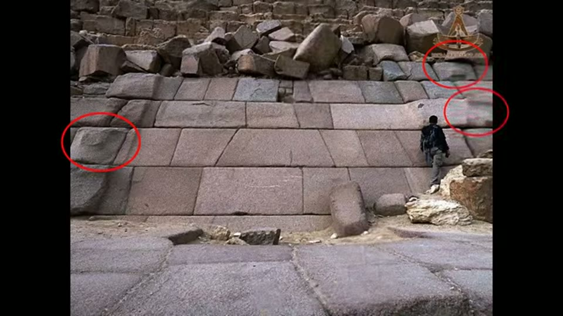
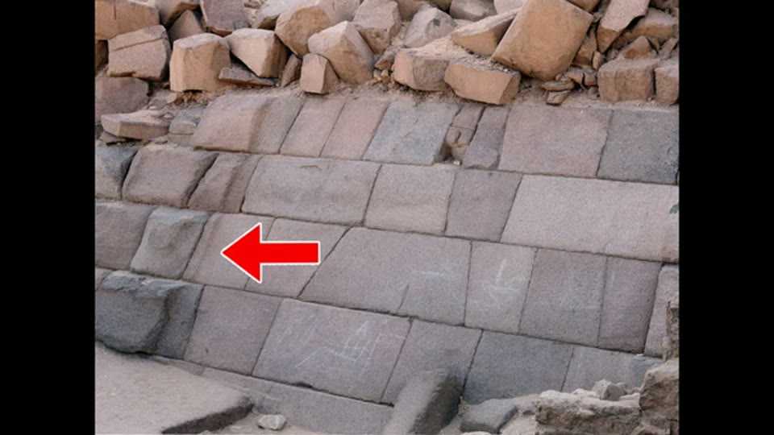
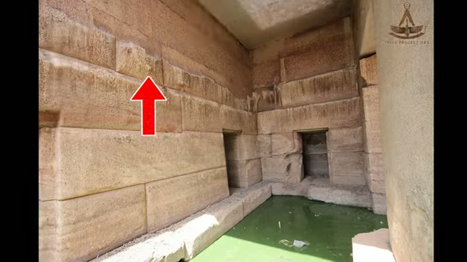
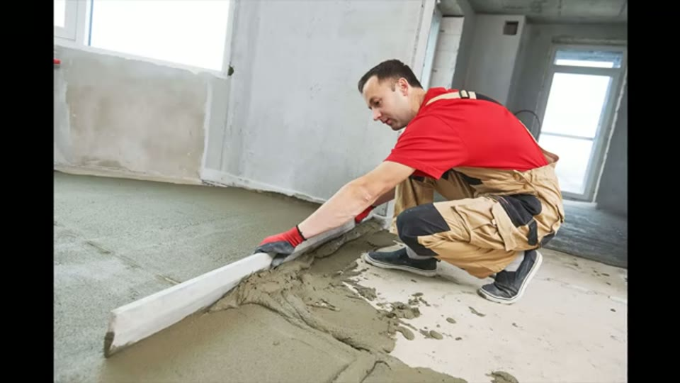
Blocks left flat on one face and bulging on another: work stopped mid-process, which she reads as screeding interrupted.
The claim. These sites were not carved from quarried stone but cast in place from a concrete or geopolymer that had a plastic state before curing 14:22–15:48. Large blocks were cast in situ, smaller ones in moulds and then set while still firm-but-pliable, then compressed from above and pushed from the sides — "like squeezing play-dough balls" — which produces the interlocking zigzag joins without any need to cut a bespoke fit.
Why mortarless, on her account 17:23–18:19. This is the one stretch where she argues the method was chosen: a dry-stacked wall is self-draining, less vulnerable to frost, subsidence, heave and thermal movement, can be as strong as a mortared wall, and flexes rather than cracks — a better choice than rigid mortared work in an earthquake zone like Peru. None of that is contested engineering; it is the standard case for dry-stone construction.
Curing does the rest 18:19–18:57. At Sacsayhuamán she points to a large upper block that appears to have warped the ones beneath it under its own weight, and argues that blocks cured for different lengths of time would be differently hard, so pressing them together would generate the varied shapes and organic seams — even from a single mould.
How the knobs follow from it 18:57–20:10. Two separate mechanisms, and she keeps them apart:
- Stamp marks / "inverted knobs" — a tool used to push a slumped, drooping block back up, leaving a pressed impression. She adds that these could equally be the marks of an ancient lifting device.
- The knobs themselves — where compression left too much material hanging over, she suggests a suction device drew off the surplus and the knobs are what it left behind. She also allows that some may have formed on their own, from the dripping of semi-liquid material.
Her supporting observation is distributional: the knobs sit predominantly on the lower portions of blocks at Ollantaytambo, Machu Picchu, many Cusco walls, Sacsayhuamán and Menkaure — which is where gravity would leave excess. She states plainly that she cannot say all such knobs were made this way, only that many could have been.
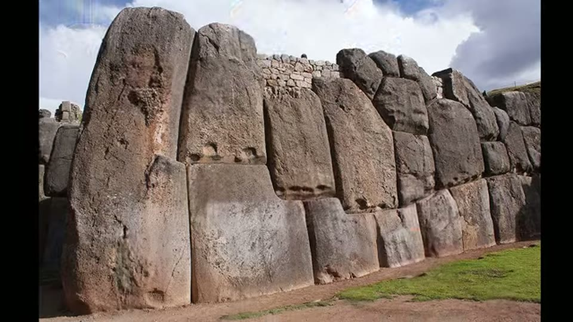
Pressed-in rectangular marks she calls inverted knobs - on the casting reading, where a tool pushed a sagging block back up.
Slump explains the variation 15:48–17:23. Concrete consistency is governed by water content. A dry, near-zero-slump mix holds a crisp edge the moment the mould comes off, giving the sleek rectangular blocks at Coricancha. A wetter mix slumps and rounds, giving the pillowy look at Sacsayhuamán and Cusco. Same method, different recipe.
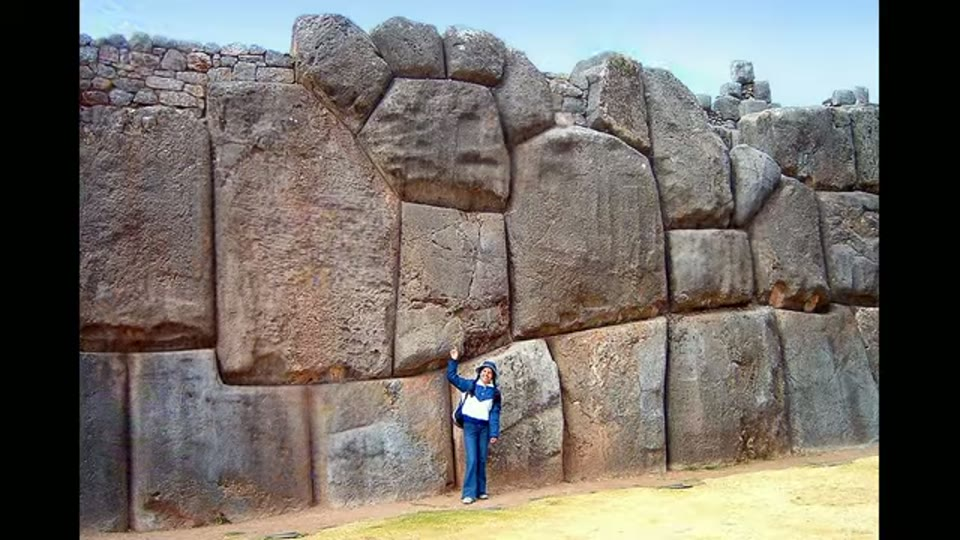
A dry, near-zero-slump mix holds a crisp edge the moment the mould comes off; a wetter mix slumps and rounds. Same method, different recipe.
What she explicitly rejects 13:02–13:34: the stone-softening idea — that quarried stone was chemically softened and re-hardened. She says she has not seen anyone demonstrate it is feasible, and that casting would be easier and more efficient than quarrying, transporting and cutting to fit.
Where she ends up 22:59–23:45: some walls with these knobs, she suggests, may originally have been finished with a plaster-like top layer covering the blemishes; the sites are "ancient advanced concrete or geopolymer structures cast in place"; and the shared features present evidence of concrete techniques "surpassing our modern ones". Whether they are the remnants of an unknown advanced civilisation is put to the viewer as a question.
See also
How Were Sacsayhuamán Polygonal Walls Built? — the same hypothesis laid out in full, for the whole wall rather than one feature, and with the one piece of laboratory analysis she cites anywhere.
What you can check yourself
- The partially-flattened blocks at Menkaure and the Osireion are the load-bearing evidence. They are photographable, and either the descriptions hold or they do not — noting that the two sites are being described differently, one block flat-and-bulging at Menkaure and upper-versus-lower courses at the Osireion.
- Scraping marks that cross block boundaries would be hard to explain on individually quarried blocks, since the mark would have to be applied after placement. Her example is a specific one at Coricancha.
- Knob distribution — her claim that they cluster on lower block portions is a counting exercise anyone could do from photographs, and she names five sites to count at.
- The Propylaea count ("more than 400") is a stated figure that can be checked.
- The dry-stone engineering claims — self-draining, tolerant of ground movement, better in seismic zones — are ordinary published construction knowledge and can be read anywhere.
- The Yangshan and Ollantaytambo knobs she tests are photographed from the ground; whether a bottom is flat or sloped is something a reader can judge from her own images.
What the video does not settle
- She does not claim all type-3 knobs came from the suction process, only that many could have; the mechanism is offered as plausible, not demonstrated. No such device is described, named or evidenced — it is a requirement of the hypothesis rather than a finding.
- No material analysis is presented here — the case is entirely morphological, from how the stone looks and behaves. Whether the material at these sites is geopolymer is exactly the contested question elsewhere, and this video does not settle it.
- The four-type scheme is her own, and the assignment of any particular knob to a type is a judgement call.
- The Osireion observation is not the same observation as the Menkaure one. A wall whose lower courses are bulkier than its upper courses is what a great many masonry structures look like; the single block flat on one face and rounded on the other is the stronger of the two, and the video presents them as one piece of evidence.
- "Surpassing our modern ones" is asserted at the close with nothing behind it — no strength figure, no durability test, no composition. It is the one sentence in the video that steps past what she has shown.
- The plaster-skin suggestion cuts against her own evidence. If these walls were finished with a covering layer that hid the knobs and marks, then the knobs and marks are construction debris that was never meant to be seen — which is also what the ordinary reading says about unfinished dressing. The suggestion is raised in one sentence and not weighed against the rest.
- The scraping strokes run in several directions at once, by her own description — horizontal, vertical and curved on the same wall. She offers this as evidence of troweling; a reader should note that inconsistent direction is equally what surface dressing by hand looks like, and the video does not test between them.
- Differential curing, warping and compression are inferences from shape alone. That a wall looks as though soft blocks settled is the observation; that they did is the conclusion, and nothing in the video separates the two.